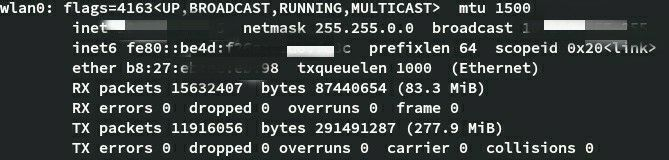

一点吐槽及原因
在历时一个半月的宿舍楼网络装修工程之后，本来光纤入户的寝室网络就被无线AP和一个校园网的无线热点替换了。有线网络无论是连接速度还是稳定性都是远在无线网络之上的，而且有线网络可以通过路由器自带的PPPoE拨号实现自动联网，而无线热点在连接上之后还要打开深澜的拨号网页进行手动拨号，手机自带的热点连接网页甚至不支持记住帐号密码。不过更为重要的是，要想使用校园网必须要办理运营商的个人独享宽带套餐，因为套餐是独享性质的，所以限定了同一时间只能有一个设备拨号联网（都9102年了人手一部手机+电脑难道不是标配吗？？）。
出于懒得手动完成拨号以及绕过同一账号只能同时在一台设备上登陆的限制，有了本篇尝试使用树莓派（或者其他什么Linux的终端）来完成自动拨号并将网络通过路由器的WAN口进行共享，以此实现路由器的“无线中继”
有大概两种方案可以实现我的这一小愿望。
1 - 通过在树莓派上运行OpenWrt等软路由系统来简单的完成无线中继的操作
作为第一种方案，这也是我最开始尝试的，在OpenWrt官网上下载并刷写系统，然后在树莓派上启动，像访问路由器一样进行初始化设定，然后使用自带的无线(Wireless)选项来扫描无线网络，连上该死的校园网热点，再在接口页面将无线设置为WAN，有线设置为LAN。同时在路由器端设置WAN口为自动获取IP即可实现将路由器连上校园网。随后在树莓派上安装python并写好实现自动拨号的代码，设置诸如开机自动运行的拨号条件即可实现我的需求。
这一方案十分的简单易懂，每一步都没有太大的难度，只是按按网页上的按钮就能完成大多数操作。但是事情到了我这里便不是这样发展的了，在最开始尝试的时候就遇到了棘手的问题，即我下载的OpenWrt系统没有无线这一选项，即使是通过shell操作也没有见到任何无线相关的接口，仿佛WLAN硬件从我的树莓派上消失了一样。开始我怀疑的是，可能无线网卡真的物理损坏了，毕竟在漫长的暑假中没有任何保护，吃了足足两个多月的灰。于是我赶忙刷了一个官方的系统，直到在系统中见到并正常使用了WLAN后才确认是OpenWrt固件自己的问题。
为了排查OpenWrt固件的问题，我在网络上找到了一个自编译的OpenWrt版本。就是[[自编译 OpenWrt R9.6.19 固件]][https://mlapp.cn/369.html] 。怀着能够一路顺利下一步的心情，我二话不说直接让树莓派跑上了这个版本。一路下一步之后，终于看到了网页上显示的大大的无线的选项，点击无线，点击扫描……在稍等了片刻之后，随着网页的刷新我只看到一个叫OpenWrt的热点，这无疑是树莓派自己的热点，除此之外没有见到有任何其他的可用网络。起初我以为是WLAN参数的设置问题，在尝试关闭自带的热点和将wlan0接口的模式换成客户端这两种操作的各种组合之后，扫描热点完成之后的可用网络列表里变得干干净净，一度让我觉得是网页无响应了，但在接入shell之后确认是没有任何的扫描结果，而非网页的问题。
到此为之我已经尝试过OpenWrt固件的很多版本，从18.XX到自编译的版本，无一例外不是没有无线的接口选项就是扫描列表空空如也。在这时我看到就在自编译版本的网页下，作者还发布了编译的教程[自编译树莓派 OpenWrt 完全指南]（在此感谢作者的无私奉献）。略读之后发现作者写得简单易懂，就连环境也是用的docker镜像的方式，在跟随作者的指南一步步操作之后，我成功地在ubuntu上完成了编译的准备，在一切准备就绪只差执行编译命令 make V=99 -j1 的时候，我完全没有在意指南开头大大的前期准备里提及的 *分区剩余空间应大于 50G * 这句话，由此有了下一篇博客（关于Arch-Linux）。跳过中间的坎坷，来到编译完成得到镜像的时候，在我熟练地开启Luci控制台之后，遇到的仍然是扫描不到可用网络的问题。
在我心灰意冷的时候，突然想起了OpenWrt的前项目LEDE，LEDE与OpenWrt固件类似，但是更加远古。不过没有关系，只要能够连上校园网并且做到接口转发就行，这对于这类为实现路由器功能的固件来说只是基础罢了。更加熟练地在SD卡上刷进系统，插入树莓派，接上电源，开机！嗯？只有电源LED在闪？还是三长四短？由此又成功触发支线剧情，详见另一篇博客（关于树莓派的小事）。最终结果当然是甚至没有能成功进入系统，更别谈什么无线网络的设置了。
自此我把该踩的坑也踩了，能走的弯路全都走了，也没有能成功的达成目的，遂果断放弃，转而选择方案二。
2 - 在Linux系统上直接实现”无线中继“的功能
第二种方案是在查阅第一种方案当中遇到的问题的时候发现的。即不通过现成的软路由固件，而是通过Linux系统进行接口转发而间接达成目的。没有一开始便选择这一方案的原因在于直接手动进行底层的一些配置对我而言太过复杂繁琐，具有一定的难度加之缺少了软路由固件当中自带的各种开箱即用的功能。而好处也是有的，那就是一定能够达成目标。总之最后我成功地通过这一方法满足了我的需求。
首先是一个十分简单的网络拓扑：
校园网——wlan0——转发——eth0——路由器
其中树莓派在中间充当转发的角色，将两接口直接的数据报转发，并在每天的重启之后完成自动拨号。
按照拓扑的第一步当然就是连上校园网了，通过iw工具和ifconfig即可完成
1 | ifconfig wlan0 up # 开启wifi |
起初我的WLAN是开机就自动打开的，后来不知道瞎搞了什么设置就必须要手动才能打开了，在开机脚本/etc/rc.local 里执行就行，无伤大雅。又因为其他不明原因 不是因为懒得看日志 ，DHCP服务在开机的时候是不能够正常开启的，需要后续手动一下
1 | dhcpcd wlan0 # 使用树莓派自带的dhcpcd服务即可 |
此时如果使用ifconfig查看接口信息的话，就可以看到wlan0已经顺利连上校园网并且获取到了IP地址

接下来设置一下eth0到路由器端的连接，将eth0设置静态IP为192.168.10.1即可，随后是路由器上的设置，WAN口参数设置为同网段的静态IP如192.168.10.2。
最后一步就是设置树莓派的数据报转发。首先要先打开Linux的转发功能
1 | sysctl net.ipv4.ip_forward=1 |
再通过iptables的nat表来实现将路由器端的内网IP换成树莓派的公网IP，
1 | iptables -A FORWARD -m state --state ESTABLISHED,RELATED -j ACCEPT |
其中关于第一条规则，鉴于本人还不是很明白，故直接引用来自 [通过iptables实现端口转发和内网共享上网] 的一段解释，感觉讲得挺清楚的 也还是不太明白
状态机制
下面我们就说说我一直在上面提到的关于那个ESTABLISHED,RELATED的规则是怎么回事，到底有什么用处。
说这个东西就要简单说一下网络的数据通讯的方式，我们知道，网络的访问是双向的，也就是说一个Client与Server之间完成数据交换需要双方的发包与收包。在netfilter中，有几种状态，也就是
new, established,related,invalid。当一个客户端，在本文例一中，内网的一台机器访问外网，我们设置了规则允许他出去，但是没有设置允许回来的规则阿，怎么完成访问呢？这就是netfilter的 状态机制 ，当一个lan用户通过这个linux访问外网的时候，它发送了一个请求包，这个包的状态是new,当外网回包的时候他的状态就是established,所以，linux知道，哦，这个包是我的内网的一台机器发出去的应答包，他就放行了。
而外网试图对内发起一个新的连接的时候，他的状态是new,所以linux压根不去理会它。这就是我们为什么要加这一句的原因。
还有那个related,他是一个关联状态，什么会用到呢？tftp,ftp都会用到，因为他们的传输机制决定了，它不像http访问那样，
Client_IP: port-->server:80然后server:80-->Client_IP:port，ftp使用tcp21建立连接，使用20端口发送数据，其中又有两种方式，一种主动active mode，一种被动passive mode。主动模式下，client使用port命令告诉server我用哪一个端口接受数据，然后server主动发起对这个端口的请求。被动模式下，server使用port命令告诉客户端，它用那个端口监听，然后客户端发起对他的数据传输，所以这对于一个防火墙来说就是比较麻烦的事情，因为有可能会有new状态的数据包，但是它又是合理的请求，这个时候就用到这个related状态了，他就是一种关联，在linux中，有个叫 ftp_conntrack的模块，它能识别port命令，然后对相应的端口进行放行。
到这一步之后就已经实现了路由器到校园网的连接，接着来讲讲自动拨号的实现。
使用Python实现校园网自动拨号
在讲实现之前先讲解以下学校校园网的拨号或者说是登录的方式。校园网的接入验证系统使用的是深澜的系统，版本号是v1.14，通过网站登陆的方式进行认证。在网上一番查阅之后，发现了大佬写的一篇python模拟登录的博客 [深澜认证协议分析,python模拟登录] ，在详细看了分析过程之后，我就直接套用了大佬的代码 。具体的代码在原博客中已经贴了，所以就只讲一下我在实际运行的时候所遇到的一些问题。
首先是获取IP地址的问题，继上文所说，在接口wlan0和eth0都有IP地址，这里只要wlan0接口的IP地址就可以了，查阅资料之后，使用socket的方法获得IP地址，通过socket的方法可以指定网络接口。
1 | import socekt ,fcntl, struct |
其次是在运行时报错，有两个关于编码的错误，一个通过在程序最开始添加 # -\*- coding: utf-8 -\* 即可。另一个是
1 | UnicodeDecodeError: 'ascii' codec can't decode byte 0xe8 in position 1: ordinal not in range(128). |
ASCII编码的错误，在 How to fix: “UnicodeDecodeError: ‘ascii’ codec can’t decode byte” 中找到解决方法，但是又留意到错误都是报在print语句中有中文的时候的，遂直接将原始代码中的中文全部换成英文即解。而后续在将程序放到开机自启动的脚本之后又有同样的编码错误，后查证是因为自启动脚本是由Linux的sh执行的，而在登录shell则是bash，更换开机shell后成功解决。
自此已经顺利完成了自动拨号并给路由器连上网络的想法。
碎碎念
一开始有这个自动联网的想法的时候完全没有考虑到会有这么的麻烦，想偷懒反而付出了更多的努力，不过即便这样我还是难得的坚持到底还不是因为垃圾校园网的反人类设定。本篇博客理论上也是由于这个校园网带出来的，写出来旨在记录折腾的一路上的各种零零碎碎的知识和收获，以免以后忘记了，也尝试了一番写作的感觉。在计算机方面我还是个萌新，如有错误还请各位大佬指正。谢谢。
参考链接
[1] [趴会儿project]No.003 基于树莓派的ipv6+OpenVPN校园网免流量无线热点/路由器